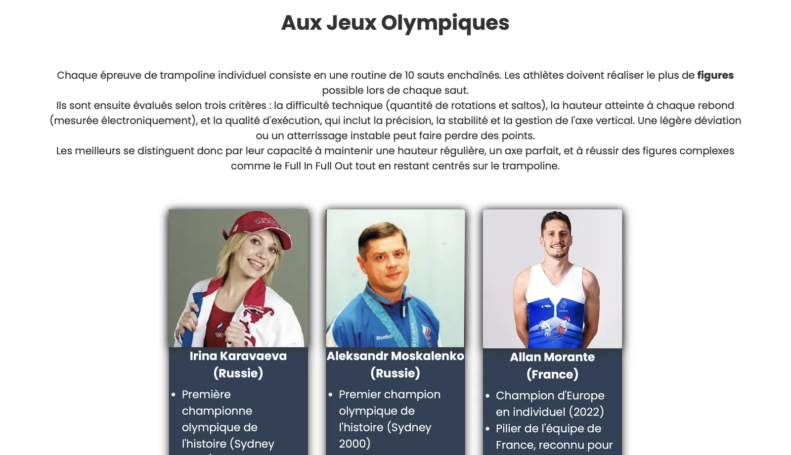

Le trampoline
Mon premier site web : cinq pages sur le trampoline, codées en HTML et CSS, avec un formulaire traité en PHP.
- Période
- Novembre 2025
- Contexte
- SAÉ 105 · BUT MMI 1re année
- Équipe
- Projet individuel

Le projet
Pour cette première SAÉ orientée web, chaque étudiant devait concevoir seul, en deux semaines, un site mettant en avant une activité sportive ou culturelle : au moins quatre pages HTML, une seule feuille de style, et un formulaire dont les données sont traitées en PHP.
J’ai choisi le trampoline, un sport souvent vu comme un simple loisir, pour présenter ses origines, ses figures, sa place aux Jeux olympiques et sa pratique au quotidien.
- 01
Veille
Contenus variés et inspirations graphiques
- 02
Conception
Planche de style et wireframe
- 03
Développement
HTML, CSS et formulaire PHP
- 04
Validation
Vérification avec le validateur du W3C
Ma démarche
J’ai réalisé ce projet seul, en cherchant d’abord les réponses par moi-même dans les cours, les tutoriels et la documentation. C’est ce projet qui m’a donné les bases du développement web :
- Conception : veille, planche de style et wireframe pour organiser les pages.
- Développement : structure HTML5 sémantique, mise en page en Flexbox et un seul fichier CSS.
- Données : formulaire relié à un script PHP qui récupère et affiche les informations saisies.
- Qualité : validation des pages avec le validateur du W3C et versionnage avec Git.